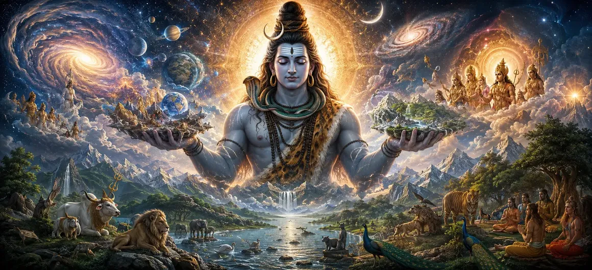

Creation and Sustenance
In Chapter 9 of the Vayaviya Samhita, Lord Vayu elaborates on the foundational principles of creation and sustenance, revealing how the universe springs forth and is maintained under the divine command of Supreme Shiva.
This discourse explores the cosmic evolution from the unmanifest absolute into structured worlds, establishing the harmony that governs all existence.
Seekers gain profound insight into the mechanics of universal preservation and divine grace.
Chapter 9 Comprehensive Highlights
Cosmic Principles
Unveiling the core tenets of universal manifestation.
Origin of Creation
Tracing the emergence of worlds from the unmanifest.
Sustenance & Balance
Examining the harmonious preservation of cosmic life.
Shiva’s Supremacy
Understanding Supreme Shiva as the ultimate controller.
Evolutionary Stages
The step-by-step unfolding of cosmic elements.
Gateway to Part 1
Preparing the seeker for detailed creation descriptions in Chapter 10.
Core Topics in This Chapter
- 01Foundational Principles of Universal Creation→
- 02Transition from the Unmanifest to the Manifest→
- 03The Sacred Role of Sustenance in Cosmos→
- 04Supreme Shiva as the Master Orchestrator→
- 05Maintaining Cosmic Harmony and Dharma→
- 06Evolutionary Progression of Cosmic Elements→
- 07The Flow of Divine Grace in Preservation→
- 08Dispelling Illusion Through Cosmic Understanding→
- 09Establishing Devotion on Cosmic Truth→
- 10Transition to the Description of Creation — Part 1→
Foundational Principles of Universal Creation
Lord Vayu explains that creation does not occur randomly; it follows precise cosmic laws rooted in the supreme will of Mahadeva.
Every element and conscious entity emerges according to an eternal blueprint designed to facilitate spiritual evolution.
Transition from the Unmanifest to the Manifest
The discourse traces how the unmanifest primal energy stirs under divine impetus, expanding into subtle and gross material dimensions.
This transition bridges formless spirit with tangible universal reality.
The Sacred Role of Sustenance in Cosmos
Sustenance ensures that once created, the worlds and living beings are nurtured with stability, light, and sustenance.
This preservation allows souls to experience life, perform righteous actions, and progress toward liberation.
Supreme Shiva as the Master Orchestrator
While individual administrators handle specific functions, Supreme Shiva remains the overarching source and director of all creation and preservation.
All cosmic processes derive their efficacy entirely from His infinite power.
Maintaining Cosmic Harmony and Dharma
Creation and sustenance function in absolute synchronization to uphold Dharma across all planes of existence.
This harmonious balance prevents chaos and ensures orderly spiritual growth for seekers.
Evolutionary Progression of Cosmic Elements
The text details how gross elements, senses, and mental faculties evolve sequentially from primal cosmic principles.
Understanding this evolution helps seekers perceive the divine architecture underlying physical reality.
The Flow of Divine Grace in Preservation
Preservation is not merely mechanical maintenance; it is an active expression of divine compassion sustaining all life.
Every breath and heartbeat in the universe reflects this ongoing sustenance.
Dispelling Illusion Through Cosmic Understanding
Recognizing the divine origin of creation breaks the illusion of independent materialism.
Seekers learn to see the sacred thread connecting every aspect of the phenomenal world.
Establishing Devotion on Cosmic Truth
Deep contemplation of creation and sustenance anchors devotion securely in absolute truth rather than blind belief.
This empowers the devotee to surrender completely to Supreme Shiva.
Transition to the Description of Creation — Part 1
Concluding this foundational overview of creation and sustenance, Lord Vayu sets the stage for diving into the detailed account of creation in the next chapter.
Extended Key Teachings of Chapter 9
Divine Blueprint
Creation follows precise cosmic laws designed by Shiva.
Primal Unfolding
Transitioning smoothly from unmanifest energy to gross matter.
Nurturing Grace
Sustenance preserves life and spiritual progression.
Shiva’s Control
All universal processes stem from Supreme Shiva.
Cosmic Order
Synchronized creation and sustenance uphold Dharma.
Gateway to Chapter 10
Prepares the seeker for the detailed description of creation next.
Expanded Spiritual Reflection
When we observe the intricate design of the universe—from galaxies to atoms—we witness the profound intelligence of Supreme Shiva at play. Creation and sustenance are not accidental occurrences; they are loving expressions of divine grace designed to guide every soul back to its eternal home.
Living the Message of Chapter 9
Acknowledge the sacred presence of divine sustenance in your daily life with gratitude and humility.
Align your actions with Dharma, recognizing that you are part of a grand, divinely orchestrated cosmic family.
Trust in the preserving grace of Supreme Shiva through all life's fluctuations.
Detailed Key Spiritual Concepts
The core principles and origin of universal creation.
The divine sustaining energy preserving the cosmos.
The transition from unmanifest spirit to manifested worlds.
Aligning creation with eternal moral order.
The supreme impetus driving all cosmic evolution.
Contemplating divine grace as the foundation of existence.
Exhaustive Chapter Summary
Vayaviya Samhita Chapter 9 ('Creation and Sustenance') explores the foundational principles and evolutionary unfolding of the universe under the supreme will of Lord Shiva. By detailing how unmanifest energy transitions into structured worlds and is continuously nurtured by divine sustenance, the text deepens the seeker's understanding of cosmic order, preparing them for the detailed account of creation in Chapter 10.
Frequently Asked Questions
1. What is the primary theme of Vayaviya Samhita Chapter 9 ('Creation and Sustenance')?
The chapter outlines the foundational principles and cosmic evolution of creation and sustenance as directed by the supreme will of Lord Shiva.
2. How does creation originate according to this chapter?
Creation originates from the unmanifest supreme consciousness of Shiva, evolving through cosmic principles into the manifested phenomenal universe.
3. What role does sustenance play in the cosmic order?
Sustenance maintains the balance, harmony, and progression of all living beings and worlds, ensuring that cosmic order (Dharma) is preserved.
4. How is Supreme Shiva connected to creation and sustenance?
Shiva is the ultimate source and controller behind both creation and sustenance, remaining unaffected and transcendental while orchestrating all cosmic acts.
5. Why is understanding creation and sustenance important for spiritual seekers?
It helps seekers recognize the divine orchestration behind the universe, fostering deep devotion and detachment from material illusions.
6. What is the next chapter for navigation after this chapter?
The next chapter for navigation is 'The Description of Creation — Part 1'.
“Creation springs from the unmanifest majesty of Shiva, and sustenance flows as His eternal grace, upholding all worlds in sacred harmony.”
Continue Through Vayaviya Samhita
Chapter 9 concludes. Continue to the next chapter, The Description of Creation — Part 1.